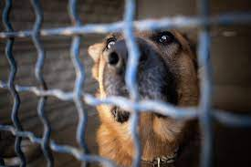
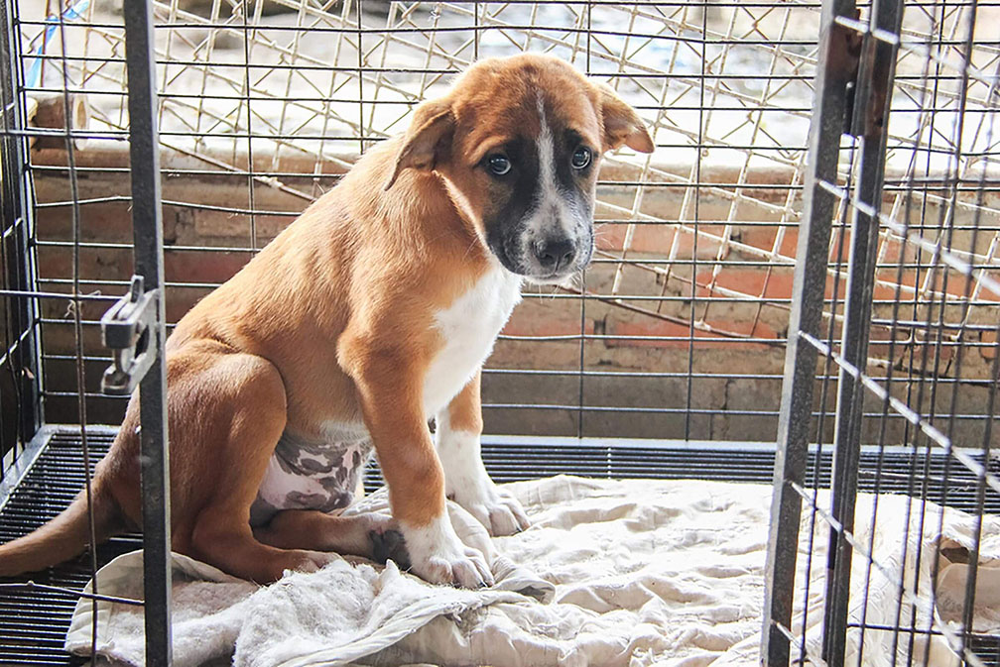
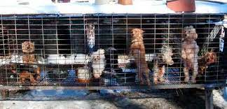
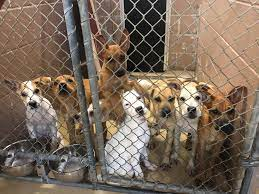

There are many types of pets in shelters.Typical breeds are cats and dogs but many shelters have a variety of animals that include horses , rabbits and pigs.
All animals deserve a great home and dont deserve to be put in a small cage.Through no fault of their own they are either dumped on the streets or left at a shelter.
While Very few animal sellers keep a good enviroment. There are alot of animal mills who keep horrible conditions. Its not even fit for humans to live in. The more people breed the less animals get adopted from shelters.
Adopting a pet from the shelter is the diffrence between life and death. If an animal is not adopted it will be put to sleep. There are so many animals that are looking for homes.

Although buying an animal you get a certain breed that is pure bred. You spend alot of money buying the animal. Most of the time it doesnt have shots or been fixed. You also run the risk of health problems from the conditions they are kept in. So in the long run adopting saves money because they already come with shots, health checkups, and have been fixed.
